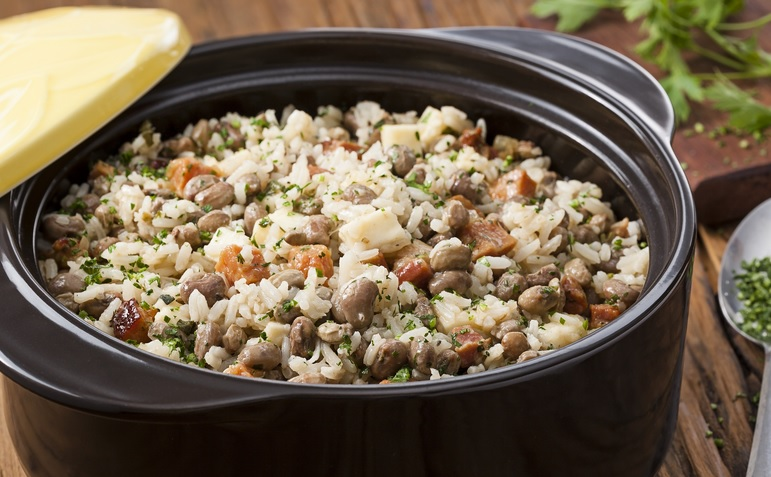

Baião de dois

Ingredientes
- 1/2 kg de feijão verde
- 2 tabletes de caldo de carne
- 1 dente de alho amassado
- 1/2 colher (sopa) de coentro picado
- 150 g de queijo de coalho cortado em fatias finas
- 1 paio cortado em rodelas
- 1 cebola ralada
- 3 colheres (sopa) de óleo
- 2 xícaras e 1/2 (chá) de arroz lavado e escorrido
Modo de Preparo
- Deixe o feijão de molho de véspera. No dia seguinte cozinhe-o juntamente com o caldo de carne e 2,5 litros de água fria.
- Tampe a panela e deixe cozinhar em fogo baixo por aproximadamente 1 hora.
- Em outra panela doure o paio, a cebola e o alho, no óleo. Junte o coentro e o arroz e refogue bem. Acrescente o feijão já cozido, juntamente com o caldo. Misture bem, tampe a panela e deixe cozinhar até que o arroz fique cozido, úmido e com consistência cremosa.
- Cubra o arroz com as fatias de queijo. Tampe a panela novamente e deixe que o vapor derreta o queijo.
- Sirva acompanhado de carne-de-sol frita ou assada.